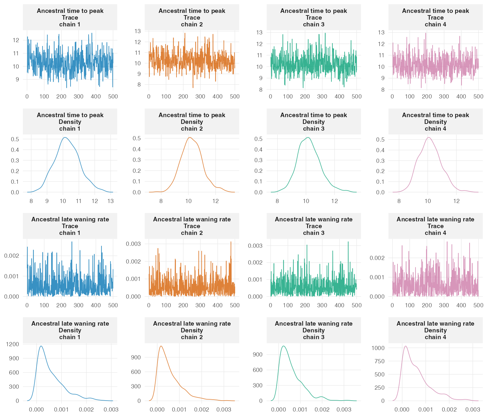

Diagnostics answer whether the sampler explored a common, stable posterior. Check them before interpreting parameters or trajectories.
diagnostics <- diagnose_epikinetics(fit)
diagnostics$overview
diagnostics$chains
diagnostics$parameters
Representative trace and marginal-density panels from the four-chain documentation fit. Each column isolates one chain; corresponding density shapes provide a compact check that chains explore the same stationary distribution. Numerical diagnostics remain essential alongside this visual screen.
The two parameters deliberately represent different kinetic features: the Ancestral population time to peak and its late waning rate. Showing every chain separately avoids hiding a poorly mixing chain behind an overlaid trace, while the matched density row makes between-chain agreement easy to compare.
What to check
The compact report screens:
- divergent transitions, which indicate that HMC could not reliably explore part of the posterior geometry;
- maximum-treedepth hits, which indicate trajectories were truncated;
- R-hat, which should be close to 1 for each estimand;
- bulk and tail effective sample sizes, which quantify information in the autocorrelated draws; and
- E-BFMI by chain, which checks whether HMC explored the energy distribution.
A non-finite E-BFMI is not treated as a harmless missing value. The chain table also reports retained energy counts and variance, helping distinguish a frozen chain with constant energy from ordinary low E-BFMI.
The report is a screen, not a replacement for parameter-level inspection. Use the underlying CmdStanR and posterior interfaces for deeper work:
stan_fit <- cmdstan_fit(fit)
stan_fit$diagnostic_summary()
stan_fit$cmdstan_diagnose()
draws <- posterior::as_draws_df(stan_fit$draws())If a chain fails, inspect its original process output:
fit$computation$sampling_state
cmdstan_fit(fit)$return_codes()
cmdstan_fit(fit)$output()Do not discard a problematic chain merely to improve a summary. Diagnose data, initialisation, model geometry, and the affected parameters. The Stan diagnostics guide provides the broader interpretation of each warning.
Once sampling is trustworthy, continue to Population-level kinetics, Individual-level kinetics, or the case study.